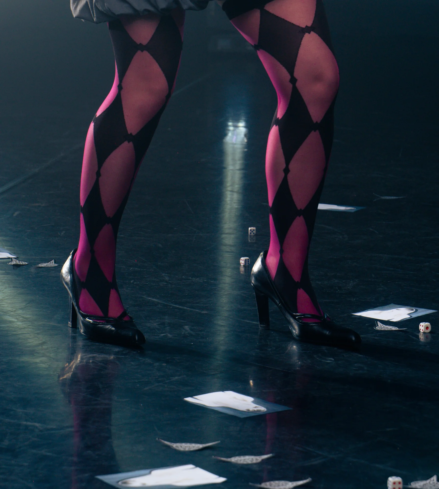
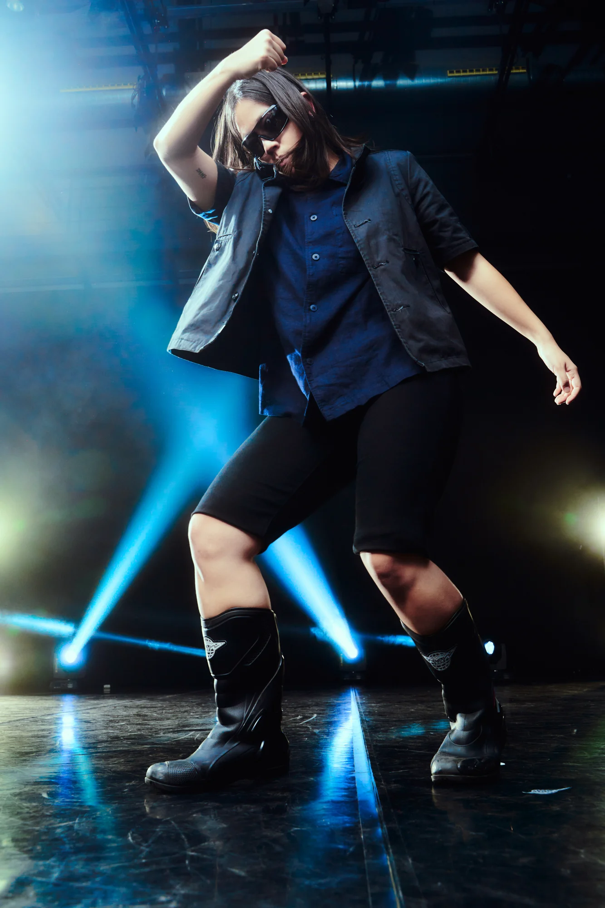

EVERAFTER (2026)
stage piece
In a capitalist realism regime, the megacorporation WKW III launches its most ambitious pilot project: EVERAFTER. It is a demo of playbour hyperreality designed to extract profit from the promise of unlimited self-fulfilment. This demo houses its first seven meta-inhabitants: Fifth Lad, Violet Fox, The Kasper, BackPack X, Sean Coby, Hairy Oxter, and Wilta Wound Wank; constantly waiting for the project to materialise, and thus reduced to the status of perpetual interns in a performative suspension of potential. The audience accesses this multiverse as an investor participating in a voyeuristic tourist experience, observing up this world in construction up close.
A co-production by the 2026 Barcelona Grec Festival, Antic Teatre, Graner, El Canal de Salt and Mercat de les Flors. With the support of La Briqueterie (Paris), Graner (Barcelona), Drassanes Civic Centre (Barcelona), Canal de Salt (Salt), LAV (Tenerife) and Fabra i Coats (Barcelona). In collaboration with the Government of Catalonia and Institut Ramon Llull.
This work has received a grant for artistic creation, research, and innovation from the Government of Catalonia.
- Autorship
- laSADCUM
- Director and choreographer
- Guillem Jiménez
- Assistant choreographer
- Marina Fueyo
- Performers
- Judit Amengual, Laia Camps, Mei-Li Dong, Martí Forcada, Guillem Jiménez, Johann Pérez, Sau-Ching Wong
- Dramaturgy
- YesSi Perse, Roberto Fratini
- Music composed by
- Alejandro Da Rocha, Guillem Jiménez
- Costume design
- Tes Rosmeri
- Set design
- Guillem Jiménez
- Lighting
- Oscila
- Graphic design
- Ahmad Hammoud
- Photography
- Alan Gomis
- Video
- MerciXula
- Outside perspective
- Vera Palomino, Javi Valls, Juan Galo
- Produced by
- Lila Brick (Muntsa Roca and Tina Martí) and Blanca Sartorius
Pics: Alan Gomi



